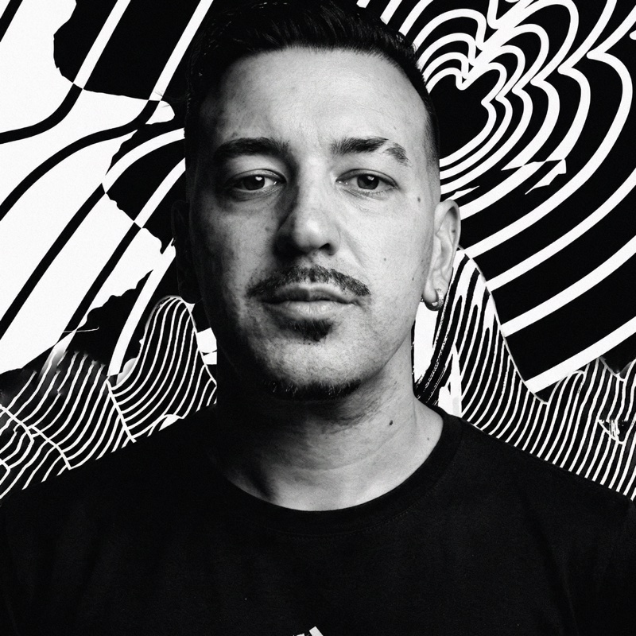

Implementa IA · Para quem conduz a operação do negócio
Sua operação não precisa passar toda por você.
Diagnóstico e implementação de IA para organizar tarefas internas repetitivas, com contexto do seu negócio, limites claros e supervisão humana.
Descobrir meu próximo passoComece pela qualificação. A implementação só faz sentido depois de entender a sua operação.
O trabalho se repete.
A dependência também.
Quando a rotina depende de você para cada passagem, delegar exige mais do que abrir um chat com IA.
Você vira a ponte entre as informações.
Uma decisão está no e-mail. O contexto, em uma conversa. A tarefa, em uma planilha. Alguém precisa juntar tudo de novo.
A mesma explicação começa do zero.
Preparar uma resposta, organizar uma reunião, conferir uma pendência. Cada tarefa traz de volta as mesmas instruções.
Até o que foi delegado volta para você.
Faltam critérios para seguir, acesso ao que importa ou clareza sobre o momento de pedir ajuda.
Hermes na sua operação
Um Sistema Operacional para conectar contexto e trabalho.
Hermes é um agente de IA. Aqui, “Sistema Operacional” significa uma camada que conecta informações, ferramentas e fluxos do negócio para apoiar a execução. Não substitui o sistema do seu computador, como Windows, macOS ou Linux.
Contexto que tem função.
Procedimentos, referências e critérios selecionados para cada rotina. A IA trabalha com o contexto disponibilizado, que precisa ser organizado e mantido atualizado.
Acesso com propósito.
Conexões apenas às ferramentas e aos dados necessários, quando tecnicamente viáveis e autorizadas por você. Permissões definidas por tarefa, não acesso irrestrito ao negócio.
Uma pessoa responde.
Regras para preparar, executar ou pedir aprovação. Enviar mensagens, alterar registros ou publicar exige limites combinados e supervisão adequada ao risco.
Autonomia não é ausência de cuidado. A IA pode errar, perder contexto ou encontrar uma integração indisponível. Revisão, registros, controle de acessos e manutenção contínua fazem parte da operação.
Começar por uma tarefa real.
Estas são possibilidades após avaliação, não funcionalidades garantidas nem casos de clientes. A escolha depende do processo, dos dados disponíveis e das integrações possíveis.
- Da reunião à próxima ação.
Organizar notas fornecidas, extrair decisões e preparar uma lista de pendências com responsáveis para conferência.
Limite: alguém valida o que foi decidido antes de distribuir tarefas ou atualizar ferramentas.
- Da pergunta recorrente ao rascunho.
Consultar procedimentos autorizados e preparar respostas para solicitações internas que se repetem.
Limite: o agente sinaliza dúvidas; respostas sensíveis e envios seguem as regras de aprovação.
- Da informação espalhada à revisão.
Reunir dados de fontes autorizadas e preparar resumos de acompanhamento, pendências ou relatórios internos.
Limite: a qualidade depende das fontes. Números e decisões precisam de conferência humana.
Entender. Implementar.
Aprender a conduzir.
Três fases para decidir o que faz sentido e construir a operação com responsabilidade.
Diagnóstico
Etapa paga, com escopo definido
Mapear rotinas, gargalos, dados e riscos. Separar o que pode receber apoio de IA do que precisa de organização, outra solução ou decisão humana.
O diagnóstico orienta prioridades e viabilidade. Pode indicar que implementar um agente não é o melhor caminho agora.
Implementação
Contexto, conexões e testes
No escopo acordado, configurar Hermes, organizar o contexto e conectar ferramentas viáveis. Definir permissões, pontos de aprovação e testar os fluxos com supervisão.
O projeto parte das tarefas selecionadas, não de uma promessa de automatizar o negócio inteiro.
Autonomia gradual
Uso acompanhado e critérios de revisão
Aprender a orientar o agente, revisar entregas e reconhecer quando intervir. Ampliar a delegação apenas conforme o funcionamento observado e os riscos de cada tarefa.
Responsáveis, documentação e manutenção precisam continuar definidos. O nível de autonomia depende do processo, não só da ferramenta.
Escopo, investimento, custos de ferramentas e condições de acompanhamento são combinados antes da contratação de cada etapa.
Descobrir meu próximo passoFaz sentido para o seu momento?
Pode fazer sentido se você…
- É dono de um negócio e reconhece tarefas internas que se repetem.
- Quer avaliar onde usar IA, em vez de contratar automação sem um problema definido.
- Pode disponibilizar contexto e acessos autorizados para o escopo escolhido.
- Está disposto a participar das decisões, revisar entregas e manter a operação.
Não é a proposta se você…
- Procura uma IA que resolva tudo sem participação sua ou da equipe.
- Espera resultado financeiro, economia de tempo ou autonomia total garantidos.
- Quer conectar dados de terceiros sem autorização ou ignorar regras de acesso.
- Precisa delegar decisões críticas sem responsável humano e sem revisão.

Vinicius Lara
Clareza para decidir.
Limites para delegar.
Ajudo donos de negócios a identificar onde a IA faz sentido e a colocá-la para funcionar na operação, com limites e responsabilidades claros.
O ponto de partida é o trabalho que precisa ser feito. A ferramenta entra para servir ao processo, com uma pessoa responsável por acompanhar o que acontece.
Antes de automatizar, defina quem responde quando algo sai do esperado.
Antes de dar o próximo passo.
Preciso entender de tecnologia?
Você não precisa chegar sabendo configurar um agente. Precisa conhecer o seu negócio e participar das decisões sobre tarefas, acessos e revisão. A implementação inclui orientação de uso dentro do escopo combinado.
O diagnóstico é gratuito?
Não. O diagnóstico é uma etapa paga, com escopo e condições definidos antes da contratação. A qualificação desta página serve para entender seu momento e indicar um próximo passo; ela não entrega nem substitui o diagnóstico.
Hermes vai acessar tudo no meu negócio?
Não é essa a proposta. Os acessos devem ser limitados ao necessário e depender da sua autorização, da viabilidade técnica e das regras de cada serviço. O tratamento de dados, os provedores envolvidos e as permissões precisam ser avaliados antes de conectar informações sensíveis.
O agente trabalha sozinho?
O nível de autonomia é definido por tarefa. Ele pode preparar materiais para revisão e, quando houver autorização e condições técnicas, executar ações delimitadas. Ações sensíveis exigem aprovação ou controles adequados. A IA pode errar; a responsabilidade humana permanece.
Qual é o investimento e o prazo?
Dependem das rotinas escolhidas, das integrações e do acompanhamento necessário. Valores, escopo, prazos e eventuais custos de infraestrutura, modelos de IA e ferramentas são apresentados antes da contratação. Esta página não promete um prazo ou resultado padrão.
Depois de implementar, ainda precisa de manutenção?
Sim. Processos mudam, permissões expiram, ferramentas recebem atualizações e o contexto precisa ser revisto. É necessário definir quem acompanha os fluxos, confere os registros, trata falhas e mantém os acessos. O formato de manutenção e suporte deve ser combinado no escopo.
E se um agente não for o melhor caminho?
A avaliação pode apontar para organizar um processo, ajustar uma ferramenta existente ou adiar a implementação. O próximo passo deve servir ao seu momento, não obrigar você a contratar um agente.
Qual é o seu próximo passo?
Conte sobre o seu negócio e uma rotina que merece atenção. A qualificação ajuda a avaliar o encaixe e orientar você para um pré-diagnóstico ou outro caminho adequado.
Se houver encaixe, o pré-diagnóstico é um segundo formulário para detalhar a rotina e avaliar uma proposta. Não é o diagnóstico pago nem confirma contratação. Responder não garante indicação de implementação.
Ainda está explorando ou quer começar por uma aplicação pessoal? Use o roteiro autoguiado Mapa de uma tarefa para organizar entradas, entrega, revisão e critérios antes de escolher uma ferramenta.
Não inclua senhas, credenciais ou dados sensíveis de clientes. Consulte a Política de Privacidade da qualificação. Se o formulário não carregar, abra em outra aba. As respostas são avaliadas por Vinicius antes de indicar o pré-diagnóstico ou uma orientação pontual.